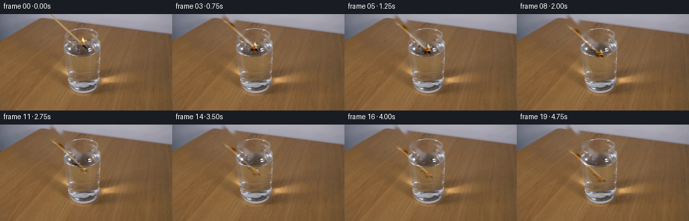
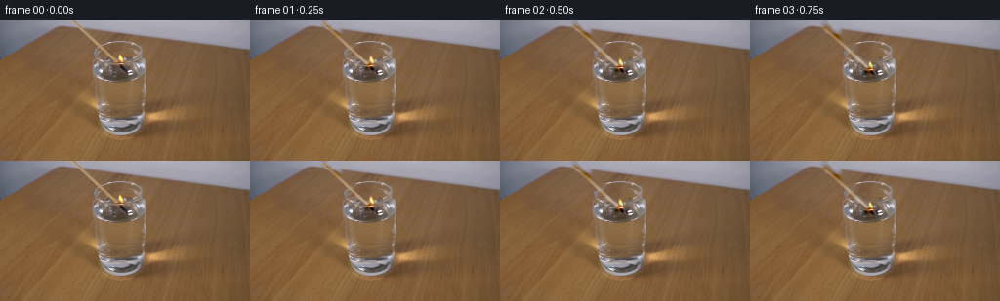
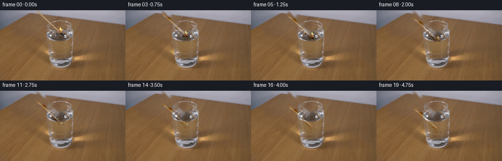
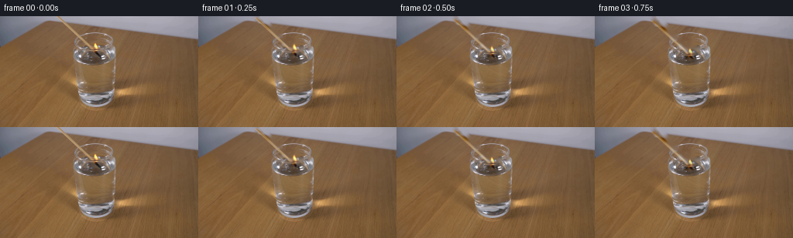

CODING AGENTS AS PIXEL WORLD MODELS
traex/GPT-5.6-Sol · 0111
点击播放 · 原生 RGB 像素
逐轮保存的候选
回放视频、检查图与代码变化。
每份候选均可单独播放。实际图片检查记录在下方工具轨迹中。
候选 01播放与检查图
点击播放 · 原生 RGB 像素


展开代码变化
--- 上一保存版本
+++ 本次保存版本
@@ -0,0 +1,193 @@
+"""Generate the requested locked-camera match-and-water demonstration.
+
+The supplied photograph is retained as the plate. The match is isolated by
+geometry (it is the thin 45 degree object ending at the flame), removed from
+the plate, and then translated down toward the water. Using the photographic
+pixels for the moving object keeps its lighting and grain consistent with the
+otherwise completely stationary shot.
+"""
+
+from pathlib import Path
+
+import cv2
+import numpy as np
+from PIL import Image
+
+import artifact_io
+
+
+HERE = Path(__file__).resolve().parent
+H, W = 144, 256
+
+
+def soft_mask(mask: np.ndarray, sigma: float = 0.7) -> np.ndarray:
+ """Return a softly antialiased 0..1 version of an 8 bit mask."""
+ a = cv2.GaussianBlur(mask, (0, 0), sigma).astype(np.float32) / 255.0
+ return np.clip(a, 0.0, 1.0)
+
+
+def warp_about_base(layer: np.ndarray, alpha: np.ndarray, dx: float, dy: float,
+ sx: float, sy: float, base=(122.0, 47.0)):
+ """Warp a premultiplied residual and its alpha about the flame's base."""
+ bx, by = base
+ mat = np.array([[sx, 0.0, bx + dx - sx * bx],
+ [0.0, sy, by + dy - sy * by]], dtype=np.float32)
+ lay = cv2.warpAffine(layer, mat, (W, H), flags=cv2.INTER_LINEAR,
+ borderMode=cv2.BORDER_CONSTANT, borderValue=0)
+ alp = cv2.warpAffine(alpha, mat, (W, H), flags=cv2.INTER_LINEAR,
+ borderMode=cv2.BORDER_CONSTANT, borderValue=0)
+ return lay, alp
+
+
+def add_ripples(frame: np.ndarray, age: int, cx: int = 124, cy: int = 63):
+ """Very restrained surface ripples where the hot match enters the water."""
+ if age < 0 or age > 7:
+ return frame
+ # Draw at 4x and reduce, so the small elliptical highlights do not look
+ # like hard computer graphics in the photographic plate.
+ s = 4
+ light = np.zeros((H * s, W * s), np.uint8)
+ dark = np.zeros_like(light)
+ r = 3.0 + age * 1.25
+ fade = max(0.0, 1.0 - age / 8.0)
+ cv2.ellipse(light, (cx * s, cy * s), (int(r * s), int(max(1.0, r * .18) * s)),
+ 0, 192, 348, int(155 * fade), 2, cv2.LINE_AA)
+ if age >= 2:
+ r2 = max(2.0, r - 4.0)
+ cv2.ellipse(dark, (cx * s, (cy + 1) * s),
+ (int(r2 * s), int(max(1.0, r2 * .16) * s)),
+ 0, 8, 166, int(100 * fade), 2, cv2.LINE_AA)
+ light = cv2.resize(light, (W, H), interpolation=cv2.INTER_AREA).astype(np.float32) / 255.0
+ dark = cv2.resize(dark, (W, H), interpolation=cv2.INTER_AREA).astype(np.float32) / 255.0
+ out = frame.astype(np.float32)
+ # Reflections are neutral and only a few code values strong.
+ out += light[..., None] * np.array([12.0, 13.0, 14.0], np.float32)
+ out -= dark[..., None] * np.array([7.0, 6.0, 5.0], np.float32)
+ return np.clip(out, 0, 255)
+
+
+def add_tiny_bubble(frame: np.ndarray, age: int, x: int, y: int):
+ """Add one faint, short-lived air bubble after immersion."""
+ if age < 1 or age > 5:
+ return frame
+ out = frame.copy()
+ yy = int(round(y - 1.15 * age))
+ xx = int(round(x + 0.5 * np.sin(age * 1.7)))
+ cv2.circle(out, (xx, yy), 1, (185, 185, 184), 1, cv2.LINE_AA)
+ return out
+
+
+def make_video() -> np.ndarray:
+ src = np.asarray(Image.open(HERE / "first_frame.png").convert("RGB"), dtype=np.uint8)
+ assert src.shape == (H, W, 3)
+
+ # The match is a narrow diagonal from the top edge to the charred head.
+ stick_u8 = np.zeros((H, W), np.uint8)
+ cv2.line(stick_u8, (73, -3), (121, 47), 255, 6, cv2.LINE_AA)
+ cv2.ellipse(stick_u8, (121, 47), (4, 5), -38, 0, 360, 255, -1, cv2.LINE_AA)
+
+ # Flame silhouette, including the small amber halo around the luminous
+ # core but excluding most of the neighboring glass highlights.
+ flame_u8 = np.zeros((H, W), np.uint8)
+ flame_poly = np.array([
+ [123, 33], [120, 36], [118, 40], [119, 43], [117, 46],
+ [120, 49], [124, 48], [128, 45], [130, 41], [127, 37], [125, 34]
+ ], np.int32)
+ cv2.fillPoly(flame_u8, [flame_poly], 255, cv2.LINE_AA)
+
+ # A slightly larger binary hole gives Telea pixels from outside the
+ # foreground, rather than smearing the bright flame back into the plate.
+ remove = cv2.max(stick_u8, flame_u8)
+ hole = cv2.dilate(remove, cv2.getStructuringElement(cv2.MORPH_ELLIPSE, (5, 5)))
+ plate_bgr = cv2.inpaint(src[:, :, ::-1], hole, 4, cv2.INPAINT_TELEA)
+ plate = plate_bgr[:, :, ::-1].astype(np.float32)
+
+ stick_a = soft_mask(stick_u8, 0.65)
+ flame_a = soft_mask(flame_u8, 0.8)
+ # Keep each residual premultiplied. This transfers the photographic
+ # contrast of the object without pasting a conspicuous patch of its old
+ # background at the new location.
+ residual = src.astype(np.float32) - plate
+ stick_res = residual * stick_a[..., None]
+ flame_res = residual * flame_a[..., None]
+
+ frames = []
+ for i in range(20):
+ if i == 0:
+ # Contract requirement: frame zero is exactly the input bytes.
+ frames.append(src.copy())
+ continue
+
+ # A deliberate, steady lowering motion, about 1.9 px per 1/4 second.
+ # A tiny rightward drift follows the hand's natural trajectory toward
+ # the centre of the glass.
+ dy = 1.90 * i
+ dx = 0.10 * dy
+ trans = np.array([[1.0, 0.0, dx], [0.0, 1.0, dy]], np.float32)
+ moved_stick = cv2.warpAffine(stick_res, trans, (W, H),
+ flags=cv2.INTER_LINEAR,
+ borderMode=cv2.BORDER_CONSTANT, borderValue=0)
+ moved_sa = cv2.warpAffine(stick_a, trans, (W, H),
+ flags=cv2.INTER_LINEAR,
+ borderMode=cv2.BORDER_CONSTANT, borderValue=0)
+
+ # The water surface is the faint ellipse near y=63. Below it the
+ # glass/water refracts the last few pixels of the match to the right
+ # and lowers contrast slightly.
+ if dy > 14.0:
+ submerged = np.zeros((H, 1, 1), np.float32)
+ submerged[63:, 0, 0] = 1.0
+ lower = moved_stick * submerged
+ lower_a = moved_sa * submerged[:, :, 0]
+ lower = cv2.warpAffine(lower, np.array([[1, 0, 1.4], [0, 1, 0]], np.float32),
+ (W, H), flags=cv2.INTER_LINEAR,
+ borderMode=cv2.BORDER_CONSTANT, borderValue=0)
+ lower_a = cv2.warpAffine(lower_a, np.array([[1, 0, 1.4], [0, 1, 0]], np.float32),
+ (W, H), flags=cv2.INTER_LINEAR,
+ borderMode=cv2.BORDER_CONSTANT, borderValue=0)
+ moved_stick = moved_stick * (1.0 - submerged) + lower * 0.68
+ moved_sa = moved_sa * (1.0 - submerged[:, :, 0]) + lower_a * 0.68
+
+ # Natural quarter-second flame flutter. It remains anchored to the
+ # match head, then collapses quickly on reaching the water.
+ if dy <= 14.0:
+ strength = 1.0
+ elif dy < 20.5:
+ strength = (20.5 - dy) / 6.5
+ else:
+ strength = 0.0
+ flick_x = 0.65 * np.sin(i * 1.71)
+ sx = 0.96 + 0.05 * np.sin(i * 2.13)
+ sy = (0.95 + 0.08 * np.sin(i * 1.37 + .4)) * (0.42 + 0.58 * strength)
+ moved_flame, moved_fa = warp_about_base(
+ flame_res, flame_a, dx + flick_x, dy, sx, sy)
+
+ out = plate.copy()
+ # Residuals are already premultiplied; alpha is used only as a gentle
+ # limiter at the antialiased fringe.
+ out += moved_stick
+ if strength > 0:
+ out += moved_flame * strength
+ # A minute warm glow gives the flame a continuous photographic
+ # halo when its silhouette flickers between source pixels.
+ glow_seed = cv2.GaussianBlur(moved_fa, (0, 0), 2.4)
+ glow = glow_seed * (1.0 - moved_fa) * strength
+ out += glow[..., None] * np.array([5.5, 2.1, -1.0], np.float32)
+
+ contact_age = i - 8
+ out = add_ripples(out, contact_age)
+ out = np.clip(out, 0, 255).astype(np.uint8)
+ if i >= 10:
+ head_x = int(round(122 + dx + 1.4))
+ head_y = int(round(47 + dy))
+ out = add_tiny_bubble(out, i - 9, head_x, head_y)
+ frames.append(out)
+
+ result = np.stack(frames).astype(np.uint8)
+ assert result.shape == (20, H, W, 3)
+ assert np.array_equal(result[0], src)
+ return result
+
+
+if __name__ == "__main__":
+ artifact_io.save(make_video(), HERE)
候选 02播放与检查图
点击播放 · 原生 RGB 像素


展开代码变化
--- 上一保存版本
+++ 本次保存版本
@@ -102,8 +102,12 @@
plate_bgr = cv2.inpaint(src[:, :, ::-1], hole, 4, cv2.INPAINT_TELEA)
plate = plate_bgr[:, :, ::-1].astype(np.float32)
+ flame_a = soft_mask(flame_u8, 0.8)
stick_a = soft_mask(stick_u8, 0.65)
- flame_a = soft_mask(flame_u8, 0.8)
+ # Do not count the same luminous source pixels in both components. The
+ # bottom of the charred head extends below the flame silhouette and stays
+ # with the stick after the flame is quenched.
+ stick_a *= (1.0 - flame_a)
# Keep each residual premultiplied. This transfers the photographic
# contrast of the object without pasting a conspicuous patch of its old
# background at the new location.
可观测工具轨迹
实际执行的命令与返回图片。
命令 1exit 0
/bin/bash -lc "cat prompt.txt && printf '\\n--- RULES ---\\n' && cat GENERATION_RULES.md"
命令 2exit 127
/bin/bash -lc "find . -maxdepth 2 -type f -printf '%p %s bytes\\n' | sort && file first_frame.png"
命令 3exit 0
/bin/bash -lc "python - <<'PY'
from PIL import Image
import numpy as np
im=np.array(Image.open('first_frame.png').convert('RGB'))
print(im.shape, im.dtype, im.min(), im.max())
for y in range(0,144,12):
print(y,[tuple(im[y,x]) for x in range(0,256,16)])
# global means and corners
print('mean',im.mean((0,1)), 'std',im.std((0,1)))
PY"命令 4exit 1
/bin/bash -lc "cat artifact_io.py && python - <<'PY'
import cv2, numpy as np
im=cv2.imread('first_frame.png')
g=cv2.cvtColor(im,cv2.COLOR_BGR2GRAY)
# luminance ASCII 64x36
chars=' .:-=+*#%@'
sm=cv2.resize(g,(64,36),interpolation=cv2.INTER_AREA)
for row in sm: print(''.join(chars[min(9,int(v)//26)] for v in row))
print('\\nEDGES')
e=cv2.Canny(g,50,120)
sm=cv2.resize(e,(64,36),interpolation=cv2.INTER_AREA)
for row in sm: print(''.join(' #'[v>30] for v in row))
# Hough lines
lines=cv2.HoughLinesP(e,1,np.pi/180,20,minLineLength=10,maxLineGap=5)
print('lines')
for a in sorted(lines[:,0].tolist(),key=lambda z:-((z[2]-z[0])**2+(z[3]-z[1])**2))[:40]: print(a)
PY"命令 5exit 0
/bin/bash -lc "python - <<'PY'
import cv2,numpy as np
im=cv2.imread('first_frame.png'); rgb=im[:,:,::-1]; g=cv2.cvtColor(im,cv2.COLOR_BGR2GRAY); e=cv2.Canny(g,35,100)
# edges ascii
sm=cv2.resize(e,(128,72),interpolation=cv2.INTER_AREA)
for row in sm: print(''.join('#' if v>60 else '+' if v>20 else ' ' for v in row))
# contours
cs,_=cv2.findContours(e,cv2.RETR_LIST,cv2.CHAIN_APPROX_SIMPLE)
print('\\ncontours')
for c in sorted(cs,key=cv2.contourArea,reverse=True)[:40]:
x,y,w,h=cv2.boundingRect(c); print(round(cv2.contourArea(c),1),(x,y,w,h))
# masks properties hsv
hsv=cv2.cvtColor(im,cv2.COLOR_BGR2HSV)
for name,mask in [('bright',(hsv[:,:,2]>190)),('orange',(hsv[:,:,0]<25)&(hsv[:,:,1]>80)&(hsv[:,:,2]>140)),('gray',(hsv[:,:,1]<35)&(hsv[:,:,2]>70)),('dark',(hsv[:,:,2]<80))]:
m=(mask.astype(np.uint8)*255); n,lab,stats,cent=cv2.connectedComponentsWithStats(m)
print('\\n',name)
for i in np.argsort(stats[1:,4])[::-1][:20]+1:
if stats[i,4]>2: print('area',stats[i,4],'bbox',stats[i,:4].tolist(),'cent',np.round(cent[i],1))
PY"命令 6exit 0
/bin/bash -lc "python - <<'PY'
import cv2,numpy as np
im=cv2.imread('first_frame.png');g=cv2.cvtColor(im,cv2.COLOR_BGR2GRAY);e=cv2.Canny(g,35,100)
lines=cv2.HoughLinesP(e,1,np.pi/360,threshold=15,minLineLength=8,maxLineGap=5)
for a in sorted(lines[:,0].tolist(),key=lambda z:-((z[2]-z[0])**2+(z[3]-z[1])**2))[:80]:
print(a, 'len',round(np.hypot(a[2]-a[0],a[3]-a[1]),1),'ang',round(np.degrees(np.arctan2(a[3]-a[1],a[2]-a[0])),1))
PY"命令 7exit 0
/bin/bash -lc "python - <<'PY'
from PIL import Image
import numpy as np
from sklearn.cluster import KMeans
im=np.array(Image.open('first_frame.png').convert('RGB'))
# kmeans cluster, print center
km=KMeans(12,random_state=0,n_init=5).fit(im.reshape(-1,3)[::3])
cent=km.cluster_centers_; print(np.round(cent).astype(int))
lab=km.predict(im.reshape(-1,3)).reshape(im.shape[:2])
# assign chars manually by center ordering output index
chars='0123456789AB'
for y in range(0,144,2):
print(f'{y:03d} '+''.join(chars[i] for i in lab[y,::2]))
PY"命令 8exit 0
/bin/bash -lc "python - <<'PY'
from PIL import Image
import numpy as np, cv2
im=np.array(Image.open('first_frame.png').convert('RGB'))
for name,(x0,y0,x1,y1) in {'top':(115,30,132,48),'left':(88,78,112,98),'right':(147,88,191,106),'bottom':(99,96,148,120)}.items():
print('\\n',name)
a=im[y0:y1,x0:x1]; hsv=cv2.cvtColor(a[:,:,::-1],cv2.COLOR_BGR2HSV)
for y in range(a.shape[0]):
s=''
for x in range(a.shape[1]):
r,g,b=a[y,x]; h,ss,v=hsv[y,x]
if v>235 and ss<70: c='W'
elif v>200 and r>g*1.15: c='Y'
elif v>180: c='+' if ss<50 else 'O'
elif v<60:c='#'
elif v<90:c='d'
elif ss<30:c='g'
elif ss<65:c='s'
elif r>g*1.5:c='o'
elif r>g*1.25:c='b'
else:c='.'
s+=c
print(f'{y+y0:3d} {s}')
print('max entries')
flat=a.reshape(-1,3); ids=np.argsort(flat.max(1))[-20:]
for i in ids[-10:]:
yy,xx=divmod(i,a.shape[1]); print((xx+x0,yy+y0),flat[i])
PY"命令 9exit 0
/bin/bash -lc "python - <<'PY'
from PIL import Image
import numpy as np
im=np.array(Image.open('first_frame.png').convert('RGB'))
# sample around diagonal x=y+75, print colors every points across normal d
for y in range(0,61,3):
x=y+75
print(y,x, ['%02x%02x%02x'%tuple(im[np.clip(y-d,0,143),np.clip(x+d,0,255)]) for d in range(-6,7)])
# vertical probable glass edge samples x=94..105 and 140..150 by y
print('glass edges avg gradients')
g=np.mean(im,2); gx=np.abs(np.diff(g,axis=1))
for y in range(20,131,5):
ids=np.argsort(gx[y,80:160])[-8:]+80
print(y, sorted([(int(x),round(gx[y,x],1)) for x in ids]))
PY"命令 10exit 0
/bin/bash -lc "python generate.py && python - <<'PY'
from PIL import Image
import numpy as np
z=np.load('pixels.npz')['pixels']
print(z.shape,z.dtype)
a=np.array(Image.open('first_frame.png').convert('RGB')); b=np.array(Image.open('frames/00.png'))
print('frame0 equal',np.array_equal(a,b))
for i in range(20):
x=np.array(Image.open(f'frames/{i:02}.png')).astype(int)
if i:
p=np.array(Image.open(f'frames/{i-1:02}.png')).astype(int)
d=np.abs(x-p)
print(i,'change px',np.sum(np.any(d,2)>2),'MAE',round(d.mean(),3),'max',d.max())
PY"命令 11exit 0
/bin/bash -lc "python - <<'PY'
from PIL import Image
import numpy as np, cv2
ims=[np.array(Image.open(f'frames/{i:02}.png')) for i in range(20)]
for i in [1,4,8,10,12,15,19]:
d=np.max(np.abs(ims[i].astype(int)-ims[0].astype(int)),2)
ys,xs=np.where(d>5)
print(i,'bbox', (xs.min(),ys.min(),xs.max(),ys.max()),'px>5',len(xs),'px>20',np.sum(d>20), 'mean changed',d[d>5].mean())
# Print tiny luminance crops frames around glass/match in 2x downsample, fixed scale
chars=' .:-=+*#%@'
for i in [0,4,8,10,12,19]:
print('\\nFRAME',i)
g=cv2.cvtColor(ims[i],cv2.COLOR_RGB2GRAY)[0:125,65:165]
sm=cv2.resize(g,(50,50),interpolation=cv2.INTER_AREA)
for row in sm: print(''.join(chars[min(9,int(v)//26)] for v in row))
PY"命令 12exit 0
/bin/bash -lc "python generate.py && python - <<'PY'
from PIL import Image
import numpy as np
src=np.array(Image.open('first_frame.png'))
print('shape/files')
a=[]
for i in range(20):
p=f'frames/{i:02}.png'; x=np.array(Image.open(p)); a.append(x)
print(i, x.shape, x.dtype, int(np.abs(x.astype(int)-src.astype(int)).sum()), sep=' | ')
print('exact first',np.array_equal(a[0],src),'stack',np.stack(a).shape)
PY
ls -lh pixels.npz inspection.png transition_check.png index.html generate.py"保存候选 2 份；完成命令 12 次；可验证图片返回 0 张。原始 API 响应与完整日志保留在本地。